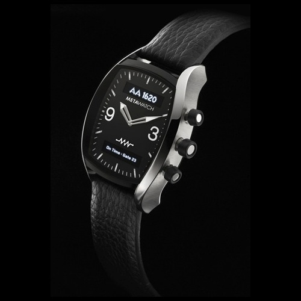

- Sony Smartwatch
- Pebble
I'M watch- MetaWatch
- COOKOO
- GPS-klokker
mutewatch- iPod nano?
3 typer
Enkeltstående
med platform
kompis med SDK
- Sony Smartwatch
- MetaWatch
- Pebble
Enkeltstående
uten platform
- GPS klokker
- mutewatch
- iPod nano
Min første "smarte" klokke

Nummer 2